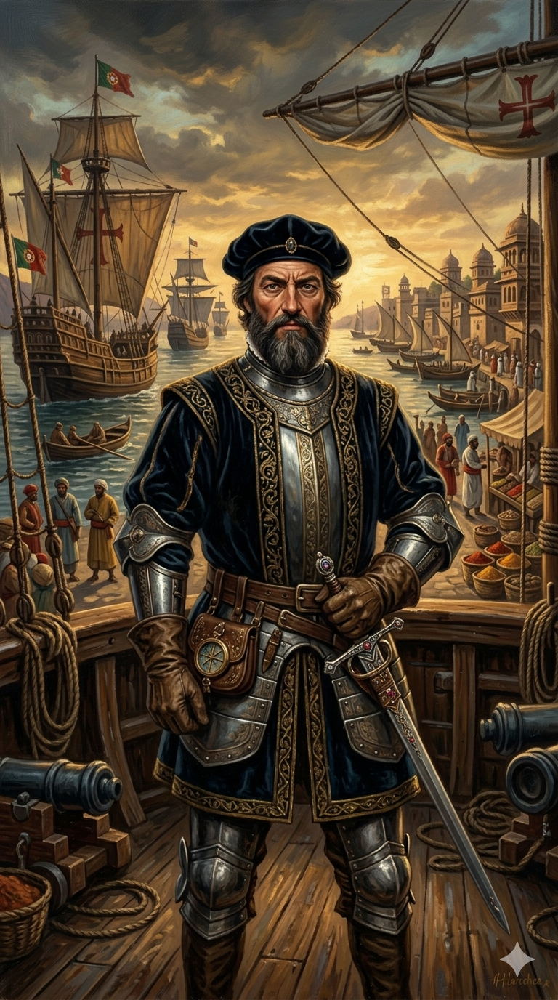

ואסקו דה גאמה

לחץ על התמונה להגדלה
מקור ומשמעות השם המלא (אטימולוגיה)
שם פרטי: ואסקו (Vasco)
השם "ואסקו" נובע מהשורש "Velasco" בבאסקית עתיקה, שפירושו "עורב קטן" או "שומר". בימי הביניים, השם סימל נאמנות ועירנות צבאית.
שם משפחה: דה גאמה (da Gama)
שם אריסטוקרטי המעיד על בעלות קרקע. "דה גאמה" מתייחס לאחוזות המשפחה, כאשר המילה "Gama" פירושה נקבת היחמור, סמל לאצולת הציד הפורטוגלית.
ילדות, שירות צבאי והקשר לבית ויזאו
ואסקו דה גאמה נולד בסינש (Sines) למשפחה שהייתה קשורה בקשרי נאמנות עמוקים לדוכס מויזאו – אביו של המלך מנואל הראשון. קשר זה היה המפתח לעלייתו. כבן לאצולת החרב, דה גאמה הוכשר כקצין במסדר סנטיאגו הצבאי (Order of Santiago), מסדר אבירים דתי-צבאי רב עוצמה.
בשנת 1492, דה גאמה הוכיח את יכולותיו הצבאיות כאשר נשלח על ידי המלך ז'ואאו השני למשימת קומנדו ימית: החרמת ספינות צרפתיות בנמלי פורטוגל כפעולת תגמול על התקפות צרפתיות. דה גאמה ביצע את המשימה באכזריות וביעילות, מה שקיבע את המוניטין שלו כ"ביצועיסט" חסר פשרות של הכתר.
מדוע נבחר דה גאמה להוביל את הארמדה?
ההחלטה של המלך מנואל הראשון למנות את דה גאמה על פני נווטים מנוסים יותר (כמו ברתולומיאו דיאש) נבעה משיקולים פוליטיים וצבאיים קרים:
- נאמנות לבית ויזאו: דה גאמה היה בן למשפחת משרתים נאמנה של אביו של המלך. מנואל רצה אדם שהוא יכול לסמוך עליו ב-100% במשימה שתקבע את גורל הממלכה.
- הבטחה ירושה: המלך הקודם הבטיח את הפיקוד על המשלחת לאביו של ואסקו, אשטבאו דה גאמה. לאחר מותו של האב, המלך מנואל בחר לכבד את ההבטחה ולהעניק את הפיקוד לבן.
- לוחם ולא רק ימאי: המשימה ב-1497 לא הייתה עוד "גילוי" (הנתיב כבר היה ידוע חלקית), אלא חדירה לתוך רשת סחר מוסלמית עוינת באוקיינוס ההודי. המלך נזקק למפקד צבאי (Fidalgo) שינהל "דיפלומטיה של תותחים", ולא לנווט שעלול להתמודד עם מרד מצד הצוות (כפי שקרה לדיאש).
המסע האפי (1497-1499): הניצחון על האוקיינוס
ב-8 ביולי 1497 הפליג דה גאמה עם ארבע ספינות. החידוש המדעי והניווטי הגדול ביותר שלו התרחש באוקיינוס האטלנטי הדרומי:
תגלית ה- "Volta do mar"
לחופי אפריקה היו רוחות וזרמים נגדיים קשים. דה גאמה "גילה" את משטר הרוחות באוקיינוס הפתוח. הוא סטה מערבה עמוק לתוך האטלנטי, כמעט עד חופי ברזיל, ושט במשך 93 ימים ברציפות ללא ראיית יבשה – ההפלגה הארוכה ביותר בים הפתוח שנערכה אי פעם עד אז (קולומבוס שהה בים פתוח רק כ-33 ימים). תמרון זה אפשר לו "לעקוף" את הזרמים ולתפוס את רוחות המערב שדחפו אותו היישר לכף התקווה הטובה.לאחר הקפת הכף, דה גאמה חדר לתוך רשת הסחר של האוקיינוס ההודי. הוא גילה עולם מפותח, עשיר ומורכב של סוחרים ערבים, הודים וסוואהילים. בעזרת נווט מקומי ממלינדי, הוא חצה את האוקיינוס ההודי והגיע לקליקוט ב-20 במאי 1498. הגילוי שלו לא היה של הודו עצמה, אלא של הנתיב הימי הרציף המחבר את אירופה לשוקי התבלינים.
השפעות היסטוריות ו"דרך ההודו" (Carreira da Índia)
הצלחתו של דה גאמה שינתה את הכלכלה העולמית באופן אלים ומהיר:
קריסת המונופול הים-תיכוני
"דרך ההודו" אפשרה לפורטוגל להביא תבלינים במחיר זול משמעותית. הדבר הוביל לקריסה כלכלית של ונציה ושל האימפריה הממלוכית במצרים, שאיבדו את דמי התיווך על סחורות המזרח.הקמת ה-Estado da Índia
בעקבות המסע, הוקמה מערכת קבועה של הפלגות שנתיות (ה-Carreira da Índia). פורטוגל הפכה למעצמה הגלובלית הראשונה, עם רשת מצודות ששלטה על נקודות אסטרטגיות מהורמוז ועד מלאקה.המחיר האנושי: דה גאמה ביסס את השליטה הזו באמצעות אלימות קיצונית. במסעו השני ב-1502, הוא הפגיז את קליקוט, טבח בדייגים תמימים, והעלה באש ספינת עולים לרגל עם מאות נשים וילדים. ה"גילוי" שלו סימן את תחילת העידן הקולוניאלי האירופי באסיה, עידן שהתבסס על עליונות טכנולוגית צבאית וניצול כלכלי.
מקורות וביבליוגרפיה
- Subrahmanyam, Sanjay (1997): The Career and Legend of Vasco da Gama (המחקר המוביל על הרקע הצבאי והפוליטי).
- Disney, A. R. (2009): A History of Portugal and the Portuguese Empire (ניתוח תמרון ה-Volta do mar).
- יומן המסע המקורי (Álvaro Velho): התיעוד היחיד ששרד מהפלגת 1497.